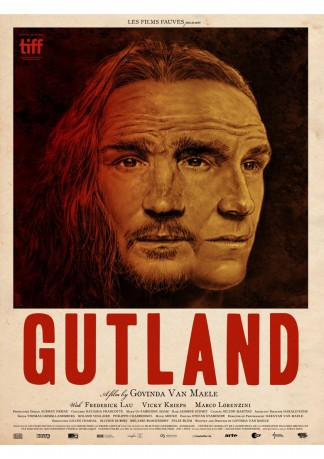

#9585 Gutland
 
 IMDB-Wertung: 6.2 / 10
IMDB-Wertung: 6.2 / 10  Tomatometer: 78
Tomatometer: 78  Metascore: 0
Metascore: 0 
Nachdem Jens (Frederick Lau) in Deutschland an einem bewaffneten Überfall beteiligt war, flüchtet er in das kleine luxemburgische Dorf Schandelsmillen und hofft, hier als Saisonarbeiter untertauchen zu können. Zunächst will ihn niemand einstellen, zumal die Erntezeit beinahe vorbei ist. Doch als er in der Dorfkneipe die Bürgermeistertochter Lucy (Vicky Krieps) kennenlernt und die Nacht mit ihr verbringt, hat er am nächsten Morgen ein Jobangebot auf dem Tisch. Langsam lebt sich Jens in Schandelsmillen ein und auch seine Beziehung zu Lucy wird intensiver, doch die teils aufdringlich freundlichen Dorfbewohner hält er stets auf Abstand, immer in Sorge, seine finstere Vergangenheit könnte entdeckt werden. Doch bald stellt er fest, dass auch einige seiner Nachbarn ihre dunklen Geheimnisse haben…
WEBHDRIP DUBBED
Jahr: 2017
Dauer: 107 Minuten
FSK:
Land: Luxemburg Studio: Dejavu-FilmverleihTonspuren: - , - ,
Untertitel: Englisch,
Auflösung: 1080p (1920x1080) Größe: 5713 MB
Genre: Thriller, Drama, Mystery
Regisseur: Govinda Van Maele
Drehbuch: Razvan Radulescu, Govinda Van Maele
Soundtrack: Dominique Depret
Darsteller:
 Vicky Krieps als Lucy Loschetter
Vicky Krieps als Lucy Loschetter Frederick Lau als Jens Fauser
Frederick Lau als Jens Fauser Pit Bukowski als Marcel
Pit Bukowski als Marcel- Martine Kohn als Fernande Loschetter
- Franco Ariete als Charel Schlosser
- Leo Folschette als Arno Kleyer
- Gerdy Zint als Nikkel
- Marco Lorenzini als Jos Gierens
- Sandy Schott als Sandy
- Marie-Louise Schaack als Josiane Wagner
- Irina Blanaru als Irina Kleyer
- Yvette Müller als Sylvie Clement
- Christiane Hoffmann als Irène Schlosser
- Gérard Blaschette als Hendrik Kleyer
- Theo Lieser als Boris Loschetter
- Pierrette Heintz als Manon Gierens
- Roger Origer als Henri Loschetter
- Nathalie Maas als Aline Wagner
- Marcel Heintz als Marko Mangen
- Arsène Streveler als Heng Clement
- Ismael Backes als Claude Wagner
- Paul Hoffmann als Frank Hastert
- Davy Mertens als Helder Gonçalves
- Jean Koch als Jean
- Guy Schwickerath als Bernard Bruck
- Nico Schlesser als Sven Hastert
- Sandro Pantanali als Sammy Kleyer
Datei: X:\2017(G-M)\Gutland (2017, FSK, 1920x1080).mkv seit 13.09.2018
Festplatte: HD 2017(A-Z)-2018(A-F)
 Es gibt insgesamt 148 Filme in der Gruppe '2017(G-M)'
Es gibt insgesamt 148 Filme in der Gruppe '2017(G-M)'